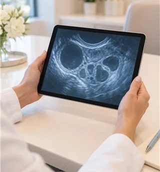

의료진 소개
임신을 준비하는 시간,
진료팀과 함께 상의하세요.
의료진 소개

산부인과 전문의
한지호 대표원장
진료시간
| 월 | 화 | 수 | 목 | 금 | 토 | 일 | |
|---|---|---|---|---|---|---|---|
| 오전 | 진료 | 진료 | 진료 | 휴진 | 진료 | 진료 | 휴진 |
| 오후 | 진료 | 진료 | 휴진 | 휴진 | 진료 | 휴진 | 휴진 |
경력 및 약력
약력
- 한빛의과대학 보건학 박사
- 현 생식의료연구회 윤리분과 위원
- 전 여성건강연구회 보조생식분과 위원
- 전 생식의료연구회 진료기록분과 간사
- 전 한빛의료원 산부인과 임상교수
- 전 새봄의료원 생식내분비 전임의
진료 관련 연구활동
- 난임 진료 과정과 검사 결과에 관한 기록 검토 및 평가
진료 주제 발표
- 냉동 배아를 이식하기 전 호르몬 준비 방법과 자궁내막 상태에 관한 진료 검토
- 난소의 반응을 보며 약물 투여량을 조절한 사례에 관한 생식의료연구회 발표
- 정자를 기증받고 보관하는 과정의 검사 및 기록 관리에 관한 연구회 발표
- 임신을 준비하는 연령에 따라 보조생식술 계획을 세울 때 살펴볼 항목에 관한 발표
연구진 교류
- 한빛 생식의료연구소 배양 연구진과 임상 교류
- 새봄 여성건강연구원 생식내분비 진료팀과 연구 교류
교육 활동
- 생식의료연구회 진료기록 교육 참여
배아와 내분비 연구 주제
- 자궁내막증에서 관찰되는 유전적 특성과 환자별 증상 차이에 대한 연구. 유전자 검사 결과를 진료에서 해석할 때의 범위와 한계를 검토합니다.
- 진행된 자궁내막증과 성장인자 관련 유전자 특성의 관계에 대한 검토. 질환의 진행 양상을 이해하기 위한 기초 연구 자료를 살펴봅니다.
- 자궁내막증 환자에서 면역반응과 연관된 유전자 변이를 비교하는 연구. 임상 소견과 검사 자료를 함께 해석하는 방법을 검토합니다.
- 염증반응에 관여하는 유전자 특성과 자궁내막증의 병변 범위에 관한 연구. 환자마다 다른 임상 경과를 파악할 단서를 살펴봅니다.
- 여성호르몬 수용체와 자궁내막증의 관련성을 다룬 연구 검토. 호르몬에 반응하는 조직의 차이가 질환에 미치는 영향을 살펴봅니다.
- 다낭성 난소 증후군에서 체질량과 유전적 요인이 함께 나타나는 양상에 관한 연구. 대사 상태와 배란 기능을 함께 평가하는 데 필요한 자료를 살펴봅니다.
- 면역조절에 관여하는 유전적 특성과 자궁내막증의 관계를 검토합니다. 검사 결과 하나로 질환을 단정하지 않도록 임상 소견과 함께 비교합니다.
- 세포 간 부착 및 염증 매개물질과 자궁내막증 병변의 관련성에 관한 연구. 여러 생물학적 요인이 함께 작용하는 과정을 검토합니다.
- 자궁내막증과 특정 유전자 변이의 관계가 뚜렷하지 않았던 연구 결과를 검토합니다. 연구의 제한점과 환자 진료에 적용할 수 있는 범위를 함께 살펴봅니다.
- 원인이 분명하지 않은 이른 난소기능 저하에서 여성호르몬 수용체의 특성을 검토합니다. 환자의 호르몬 수치와 임상 경과를 함께 살펴봅니다.
- 다낭성 난소 증후군과 호르몬 수용체 유전자 특성에 관한 연구. 배란장애가 나타나는 여러 요인을 이해하기 위한 자료를 검토합니다.
- 혈관 기능과 연관된 유전자 특성을 자궁내막증 환자에서 살펴보는 연구. 병변의 형성과 진행에 영향을 줄 수 있는 요소를 검토합니다.
- 선천적인 자궁 형태의 차이와 유출로 폐쇄가 함께 있는 사례의 진료 검토. 영상검사와 내시경 소견을 바탕으로 치료를 계획하는 과정을 살펴봅니다.
- 환경 반응 및 대사 관련 유전자와 자궁내막증의 연관성에 관한 검토. 다양한 노출 요인과 환자의 증상을 함께 해석하는 데 참고합니다.
- 난포자극호르몬 수용체의 차이와 과배란 유도 시 난소 반응에 관한 연구. 약물 사용 전후 관찰 자료를 바탕으로 개인별 차이를 살펴봅니다.
임상 진료 연구 주제
- 보조생식술의 시술 유형별 진료 현황과 결과를 정리한 자료 검토. 치료 단계에 따른 기록 방식과 결과 해석의 범위를 확인합니다.
- 시험관아기와 인공수정 등 보조생식 진료의 연도별 현황 검토. 같은 기준으로 자료를 비교할 때 주의할 점을 살펴봅니다.
- 난임시술 결과를 집계하는 방법에 관한 연구 검토. 임신율과 출생 결과의 정의를 구분해 자료의 의미를 해석합니다.
- 자궁경부에 착상된 임신의 진단과 치료 과정을 살펴보는 사례 검토. 초음파 소견과 출혈 위험을 평가하고 경과를 추적한 기록을 확인합니다.
- 조기 난소기능 저하와 난소호르몬 관련 유전자의 관계에 대한 자료 검토. 생리 이력과 검사 소견을 함께 해석하는 데 참고합니다.
- 자궁내막증에서 대사효소 관련 유전자의 특성을 조사한 연구 검토. 질환에 영향을 줄 수 있는 요인을 여러 관점에서 살펴봅니다.
- 출생체중과 임신 주수에 따른 성장 평가표 검토. 같은 수치라도 주수에 따라 해석이 달라지는 이유를 살펴봅니다.
- 임신 중 혈액검사 지표와 고혈압성 질환의 연관성에 대한 자료 검토. 위험요인을 확인한 뒤 추적 관찰에 활용하는 범위를 살펴봅니다.
- 임신 기간에 나타난 정맥 확장 증상의 경과를 살펴보는 사례 검토. 출혈 여부와 동반 증상에 따라 관찰 방법을 정한 기록을 확인합니다.
- 자궁내막증 환자의 자궁내막에서 혈관생성인자가 나타나는 양상에 관한 연구. 조직 변화와 임상 소견의 관계를 검토합니다.

산부인과 전문의
윤서진 대표원장
진료시간
| 월 | 화 | 수 | 목 | 금 | 토 | 일 | |
|---|---|---|---|---|---|---|---|
| 오전 | 진료 | 진료 | 진료 | 진료 | 휴진 | 진료 | 휴진 |
| 오후 | 진료 | 휴진 | 진료 | 진료 | 휴진 | 휴진 | 휴진 |
경력 및 약력
약력
- 한빛의과대학 의학과 졸업
- 한빛의료원 인턴 수료
- 새봄의료원 산부인과 전공의 수료
- 새봄의료원 생식내분비 전임의 수료
- 생식의료연구회 회원
- 임상배양연구회 회원
- 국제 난임진료 연구모임 회원
- 생식건강 학술교류회 회원
교육 이력
- 여성건강연구회 생식내분비 교육과정 이수
주요 연구 주제
- 기생성 자궁근종에서 발생한 급성 복통의 원인과 진료 과정에 관한 사례 검토. 영상검사 소견과 치료 뒤 경과를 살펴봅니다.
- 자궁내막증 수술 전 검사 지표와 골반 내 유착 정도를 비교한 연구. 검사 결과와 실제 소견의 차이를 진료 계획에 어떻게 반영하는지 검토합니다.
- 조산에서 확인한 세균 감염과 임신 및 신생아 경과에 관한 연구. 감염 검사와 분만 전후 관리의 관계를 살펴봅니다.
- 태반 유착이 의심되는 경우의 진단과 분만 준비에 관한 연구 검토. 출혈 위험을 고려한 관리 과정과 결과를 확인합니다.
연구 주제 발표
- 생리 주기와 초음파 관찰을 활용한 배란 시점 판단 및 배란유도 진료에 관한 교육 발표
- 무정자증 부부에서 난자와 정자, 배아를 단계별로 동결하고 해동한 치료 과정에 관한 사례 검토. 각 단계의 배양 기록을 비교합니다.
산부인과 전문의
정하린 진료원장
진료시간
| 월 | 화 | 수 | 목 | 금 | 토 | 일 | |
|---|---|---|---|---|---|---|---|
| 오전 | 진료 | 진료 | 휴진 | 진료 | 진료 | 진료 | 휴진 |
| 오후 | 진료 | 휴진 | 휴진 | 진료 | 휴진 | 휴진 | 휴진 |
경력 및 약력
약력
- 새봄의료원 인턴 수료
- 새봄의료원 산부인과 전공의 수료
- 산부인과 전문의 취득
- 새봄의료원 산부인과 생식내분비 전임의
- 한빛여성의료원 난임진료부 진료과장
주요 연구 주제
- 기생성 자궁근종에서 발생한 급성 복통의 원인과 진료 과정에 관한 사례 검토. 영상검사 소견과 치료 뒤 경과를 살펴봅니다.
- 자궁내막증 수술 전 검사 지표와 골반 내 유착 정도를 비교한 연구. 검사 결과와 실제 소견의 차이를 진료 계획에 어떻게 반영하는지 검토합니다.
- 조산에서 확인한 세균 감염과 임신 및 신생아 경과에 관한 연구. 감염 검사와 분만 전후 관리의 관계를 살펴봅니다.
예방의학 전문의
차은서 대표원장
진료시간
| 월 | 화 | 수 | 목 | 금 | 토 | 일 | |
|---|---|---|---|---|---|---|---|
| 오전 | 진료 | 휴진 | 진료 | 휴진 | 진료 | 진료 | 휴진 |
| 오후 | 진료 | 진료 | 진료 | 휴진 | 진료 | 휴진 | 휴진 |
경력 및 약력
약력
- 여성건강연구회 의료교육 과정 이수
- 한빛의료원 예방의학과 근무
- 새봄의료원 건강관리실 근무
- 누리보건연구원 근무
- 해외 배양연구 교육과정 연수
- 한빛대학교 보건학 박사과정 수료
- 여성초음파연구회 회원
- 여성내분비연구회 회원
- 임상영양연구모임 회원
주요 학술활동
- 지역 보건관리 학술교류회 참석
- 감염관리 실무 교육과정 참여
- 보조생식 배양기술 교육과정 수료
- 보건관리 교육 이수